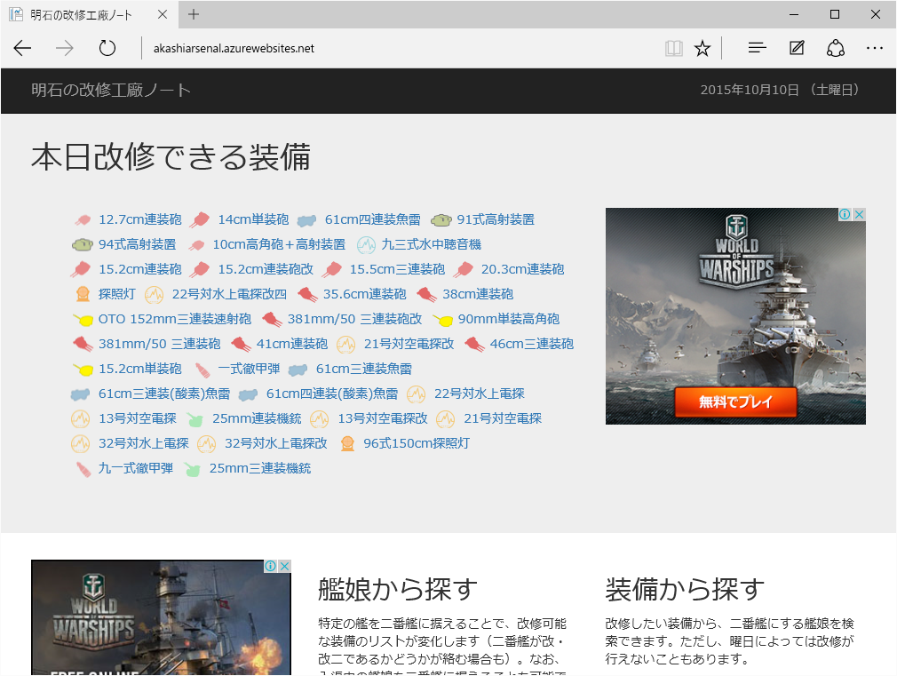
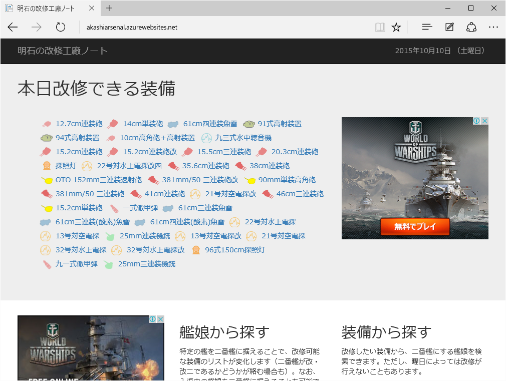

久しぶりに WebMatrix で遊んだ。
公開日：

以前に作った http://akashiarsenal.azurewebsites.net/ のデザインを Twitter Bootrap を使って作り直した。モバイルにも対応できてちょっとうれしい。
あと、http://ehime-traffic.azurewebsites.net/ は航空会社のサイトがちょっと改修された関係で、今は一部が動かなくなっている。こっちは直すのに時間がかかりそう。
公開日：

以前に作った http://akashiarsenal.azurewebsites.net/ のデザインを Twitter Bootrap を使って作り直した。モバイルにも対応できてちょっとうれしい。
あと、http://ehime-traffic.azurewebsites.net/ は航空会社のサイトがちょっと改修された関係で、今は一部が動かなくなっている。こっちは直すのに時間がかかりそう。
© daruyanagi 2007-2020.